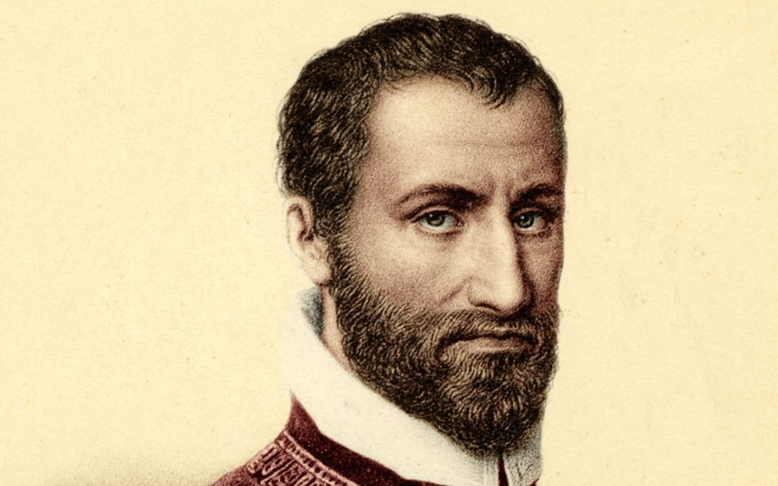
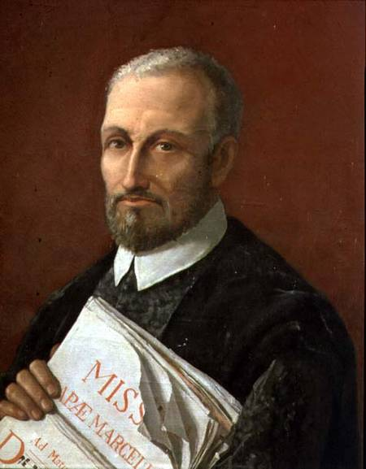

Giovanni Pierluigi Da Palestrina
Regarded as one of the most highly acclaimed musicians of the sixteenth century, Palestrina wrote a tremendous amount of musical works, refining and defining the very musical style of his time.

Palestrina, as a young boy, received his first musical training in Rome as choir boy at Santa Maria Maggiore by 1537. In 1544, he accepted a post as organist for the Cathedral of Palestrina. While there, he married Lucrezia Gori and met the future Pope Julius III (whom Palestrina honored with the dedication of his First Book of Masses). He returned to Rome in 1551, serving as Master of the Boys for the Vatican's Capella Giulia and then, at Pope Julius' instigation, singing in the Sistine Chapel. When his wife and sons died, he vowed to the Pope that would become a priest, but fell for a wealthy widow of a merchant and renounced his vows and was then fired. Then he became choirmaster for Saint John Lateran.

The 1560s were a time of great musical productivity for Palestrina and took upon many more roles and duties in the church: He served the basilica of Santa Maria Maggiore, the Seminario Romano, and published four more books of music. He even turned down an offer to become chapelmaster for the Holy Roman Emperor. In addition, he performed freelance work for several Roman churches, and involved himself in real estate and business management.
Palestrina published over 30 collections of compositions (both secular and non-secular) during his lifetime; including over 700 works which survive in manuscripts. He is best known for the 104 masses, though he composed a wide variety of music and genres, as well as nearly 100 madrigals. Palestrina's mastery of contrapuntal music is astounding and can be appreciated most specifically in the music of the canonic masses he wrote for liturgy. His music paved the way for more advanced and methodical contrapuntal music characterized by the Baroque Period. Palestrina's ability to use ornamentation in his hymn melodies is evident, but the texture and freely composed parts of his songs integrate so well, making ornamentation indistinguishable. The texture of his compositions are composed of more melodic and harmonic elements than composers before him.